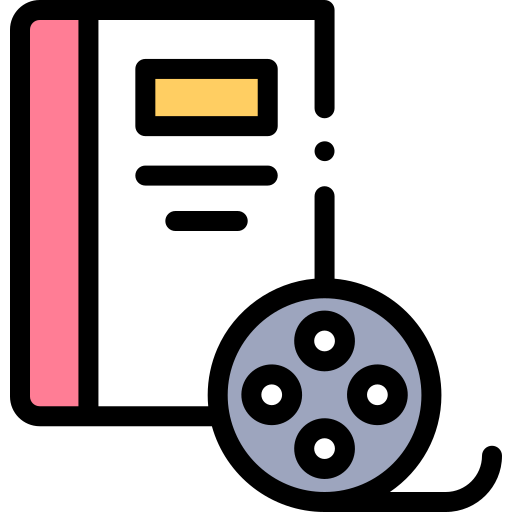

JOON ACTOR
대본 판독 · OCR 테스트 v0.2.0

내 대본
대본은 브라우저에만 저장돼. 서버로 업로드하지 않아.
대본 없음
대본은 브라우저에서만 열립니다. PDF 이미지 속 글자는 아직 자동 OCR을 지원하지 않습니다.
대본 편집
리딩 설정
실시간 마이크 대화, 배역 자동 분리, AI 감정 연기는 아직 연결되지 않았어. 현재는 대본 입력·저장 및 선택 문장 읽기 테스트 버전이야.
대본 자동 판독 · v0.2.0
스캔 PDF 한글 OCR은 오탈자가 발생할 수 있어. 원본 화면과 인식 결과를 비교하고 교정한 뒤 저장해 줘. OCR은 이 아이폰에서 처리하며, 첫 실행은 언어 모델 다운로드가 필요해. PDF 원본은 서버에 전송하지 않아.
PDF 미선택
PDF를 불러오면 원본 페이지가 표시돼.
PDF를 먼저 불러와 줘.
OCR 결과 · 직접 교정미저장
분석 결과는 후보일 뿐 확정된 등장인물·감정 정보가 아니야.
연습용 실시간 AI 연기는 다음 개발 단계야. 현재는 판독 정확도 검증 단계야.